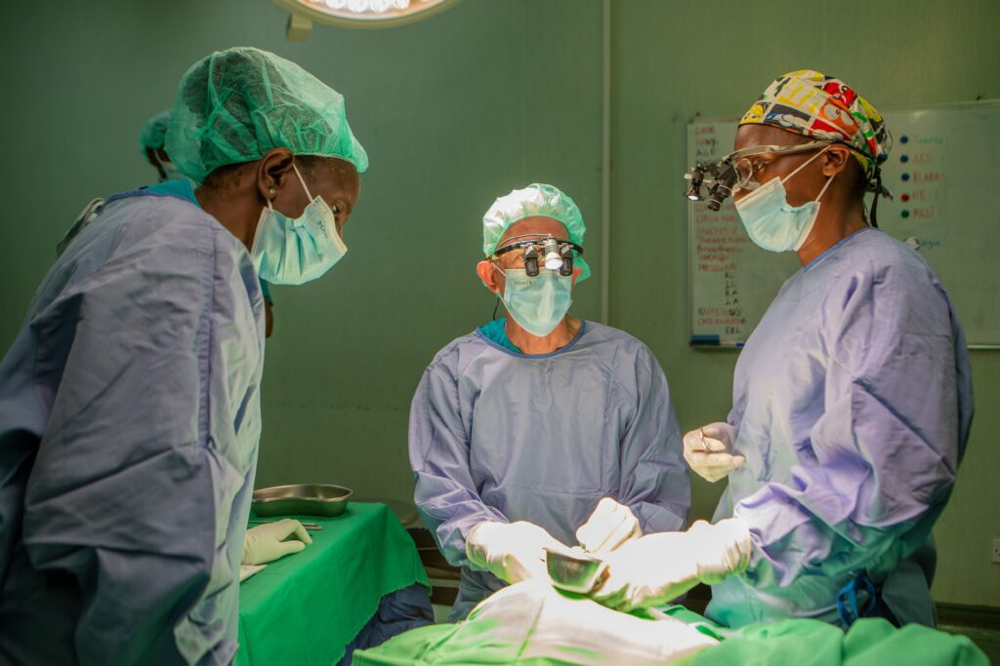

Strategic communications · Beit CURE Children's Hospital
Beit CURE Malawi launches cleft service line
I wrote an article announcing a new cleft lip and palate service at Beit CURE Children's Hospital. I turned clinical information into a clear story for families and partners, using patient stories and clinicians' voices, and ending with a direct call to action for families. The service line has since treated over 30 children with cleft lip and palate, in addition to the 2,500 orthopaedic surgeries the hospital performs each year.